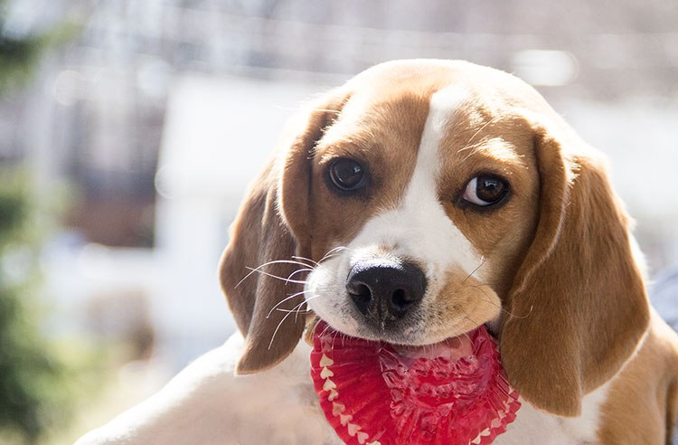
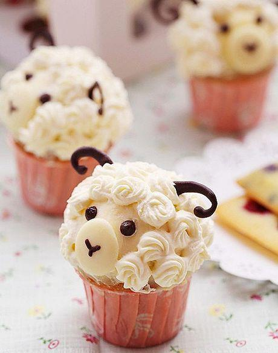

Juniper's Pupcakes has been making dog birthdays special since 1999. We make our pupcakes without sugar and your dog doesn't care. Your dog will go crazy for our classic pupcake flavors, like trash alley and liver pate. Have a special flavor in mind? We'll do our best to create it in our test kitchen. Check out our specials below and order your doggy dozen today!
On sale now!
Don't have a dog? We got you and your beloved pet covered. We are happy to make catcakes, or even a fancy cupcake for your sheep. The possibilities are endless.
Have Questions? Call us at 503-PUP-CAKES or email us to place an order.